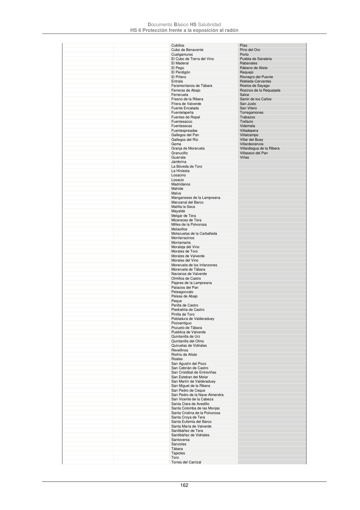

DB-HS Salubridad · edición 2022-06-14 · capa oficial
Documento DB-HS-oficial · SHA-256 del PDF 68df3caacc95f71aee2ec1ba7b2c65ae66155c21e3a8785521b8fdd4fd640d3b
Página física 162 de 184.
Copia fiel del PDF fuente · Fuente oficial
Ficha de la disposición en la fuente oficial
Formato: Texto de la página (Markdown)
Documento Básico HS Salubridad HS 6 Protección frente a la exposición al radón 162 Cubillos Pías Cubo de Benavente Pino del Oro Cuelgamures Porto El Cubo de Tierra del Vino Puebla de Sanabria El Maderal Rabanales El Pego Rábano de Aliste El Perdigón Requejo El Piñero Rionegro del Puente Entrala Robleda-Cervantes Faramontanos de Tábara Roelos de Sayago Ferreras de Abajo Rosinos de la Requejada Ferreruela Salce Fresno de la Ribera Samir de los Caños Friera de Valverde San Justo Fuente Encalada San Vitero Fuentelapeña Torregamones Fuentes de Ropel Trabazos Fuentesaúco Trefacio Fuentesecas Videmala Fuentespreadas Villadepera Gallegos del Pan Villalcampo Gallegos del Río Villar del Buey Gema Villardeciervos Granja de Moreruela Villardiegua de la Ribera Granucillo Villaseco del Pan Guarrate Viñas Jambrina La Bóveda de Toro La Hiniesta Losacino Losacio Madridanos Mahide Malva Manganeses de la Lampreana Manzanal del Barco Matilla la Seca Mayalde Melgar de Tera Micereces de Tera Milles de la Polvorosa Molacillos Molezuelas de la Carballeda Monfarracinos Montamarta Moraleja del Vino Morales de Toro Morales de Valverde Morales del Vino Moreruela de los Infanzones Moreruela de Tábara Navianos de Valverde Olmillos de Castro Pajares de la Lampreana Palacios del Pan Peleagonzalo Peleas de Abajo Peque Perilla de Castro Piedrahita de Castro Pinilla de Toro Pobladura de Valderaduey Pozoantiguo Pozuelo de Tábara Pueblica de Valverde Quintanilla de Urz Quintanilla del Olmo Quiruelas de Vidriales Revellinos Riofrío de Aliste Roales San Agustín del Pozo San Cebrián de Castro San Cristóbal de Entreviñas San Esteban del Molar San Martín de Valderaduey San Miguel de la Ribera San Pedro de Ceque San Pedro de la Nave-Almendra San Vicente de la Cabeza Santa Clara de Avedillo Santa Colomba de las Monjas Santa Cristina de la Polvorosa Santa Croya de Tera Santa Eufemia del Barco Santa María de Valverde Santibáñez de Tera Santibáñez de Vidriales Santovenia Sanzoles Tábara Tapioles Toro Torres del Carrizal

Datos candidatos: compruebe celdas y notas en el PDF.